Feedback Net Training
GAN Training
The overall problem of Q8-prediction remains a challenge in the field. Recent advancement for AlphaFold established a benchmark during CASP14 with score of 92.4 out of 100 for Global Distance Test (GDT). Given the complexity of this problem,we omit the exact positioning of the structure for the purposes of this publication and focus just on whether it appears in any given sequence or no. The Feedback Network was implemented as a multi-label classifier. More specifically, the last layer of the network consists of eight nodes, each with sigmoid activation and the network utilizes the binary cross-entropy loss. Given the sequence, language-like, nature of the problem we implemented an architecture that combines combine an embedding layer and bidirectional LSTMs.

Generative Adversarial Network was pre-trained on over 23,000 real sequences. The hyperparameters were
chosen based on the training loss of the generator and the discriminator, the converging gradient penalty,
and the resemblence of the generated outputs to the real sequences.
In particular, notice the shift of the biochemical properties of the generated sequences as compared to
the real ones. These properties were analyzed using metrics the model has never, using a
protein analysis
software.
seen but is still able
to match almost all parameters after 20 epochs.